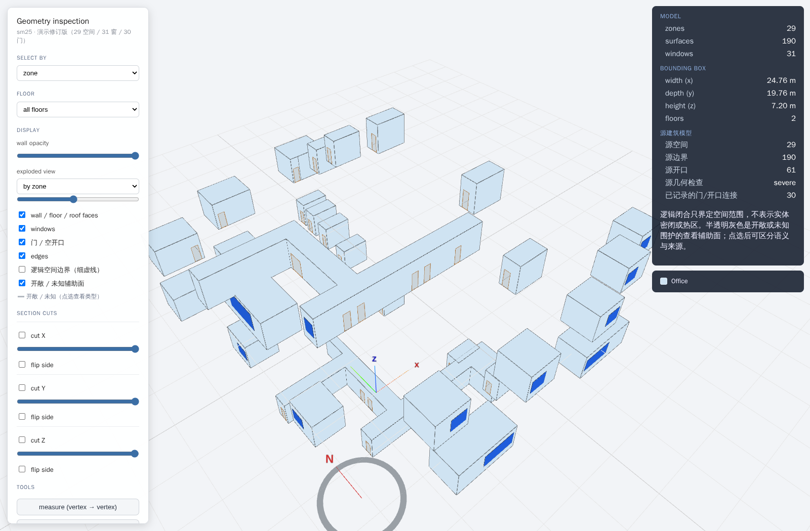
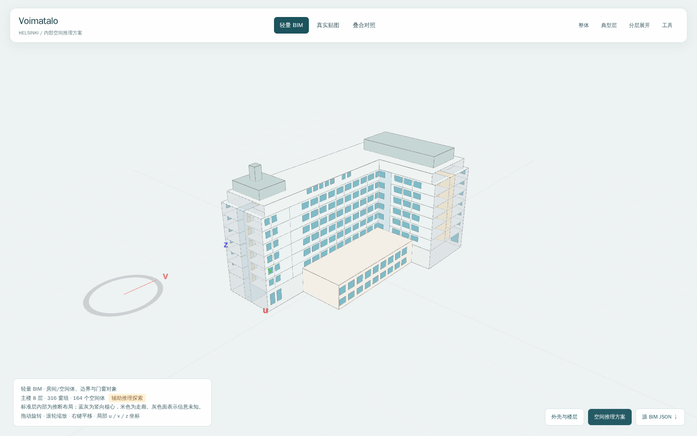

09-11 课题汇报 · 展示资产
两份独立、可嵌入的离线演示资产。它们展示不同输入条件下的轻量 BIM 工作，不构成完整 slides。

两份资产均独立保存。人工展示修订与内部推理均有记录；浏览器及几何检查不代表真实建筑保真、生产 Agent 自动生成或仿真验收通过。
两份独立、可嵌入的离线演示资产。它们展示不同输入条件下的轻量 BIM 工作，不构成完整 slides。


两份资产均独立保存。人工展示修订与内部推理均有记录；浏览器及几何检查不代表真实建筑保真、生产 Agent 自动生成或仿真验收通过。